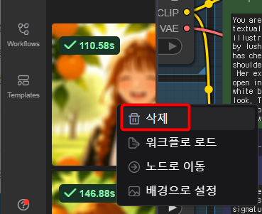
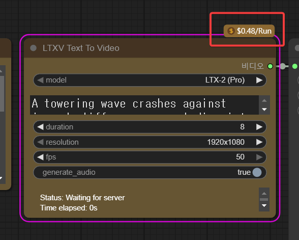
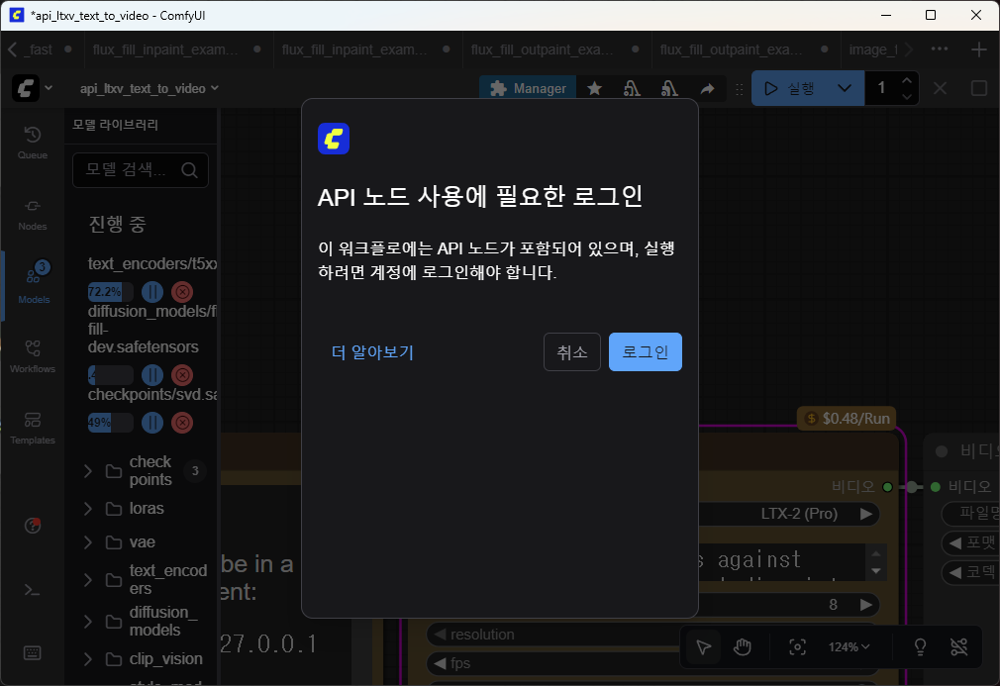

ComfyUI 기본 사용법
기본 사용법
화면 이동(패닝)
마우스 가운데 휠을 누르고 마우스 움직이기
화면 확대 축소(줌 인 / 줌 아웃)
마우스 가운데 휠 돌리기
템플릿 열기

comfyUI 실행하면 바로 위와 같은 템플릿이 나온다. 이 템플릿을 다시 보는 방법은 2가지가 있다.
-
메뉴에서 “템플릿 탐색” 실행

-
툴바에서 Templates 선택

결과 이미지로 워크플로 다시 로드하기
comfyUI로 만든 이미지에는 그 이미지를 만들 때의 워크플로가 저장되어 있어, 그 이미지만으로도 나중에 다시 워크플로를 로드할 수 있다.
-
comfyui로 만든 이미지를 내 PC에 저장한다.
-
새 워크플로를 연다.

-
저장했던 이미지를 워크플로에 드래그 & 드롭한다.
-
그 이미지를 만들 때 사용했던 워크플로가 다시 나타난다.
한 번에 여러 개 실행하기
compyUI를 이용해 모델에게 일을 시키면, 그 때마다 약간씩 다른 결과물을 보여준다. 문제는 결과가 나오기까지 한참 기다린 다음 실행 버튼 누르고 또 한참 기다려야 한다는 점이다.
만약 10개를 한 번에 만들어 보고 싶으면

실행 버튼 옆의 위아래 화살표를 눌러 “1“이라 되어 있는 숫자를 “10“으로 바꿔주면 된다.
이렇게 일괄 처리 해주는 것을 batch(배치) 라 한다.
이렇게 10으로 바꾸고 실행하면,

queue에 10개의 칸이 생기고 맨 아래 하나만 Running(실행) 상태이고 나머지는 Pending(대기) 상태로 표시된다.
queue에서 결과물 삭제

결과물 이미지, 동영상 등을 오른쪽 클릭한 후 “삭제” 버튼
queue에 있는 결과물을 만들었던 워크플로 다시 읽어들이기

결과물 이미지, 동영상 등을 오른쪽 클릭한 후 “워크플로 로드” 버튼
이걸 만들었던 워크플로를 다시 읽어들여 다시 사용했던 프롬프트 등을 확인할 수 있고, 다시 수정해서 다른 결과를 만드는데 사용할 수 있다.
유료 모델

유료 모델은 노드에 금액이 표시된다. 이 모델의 경우 한 번 실행할 때마다 $0.48를 지불해야 한다.

그래서 “실행” 버튼을 누르면 과금을 위한 로그인을 하라는 안내가 나온다.